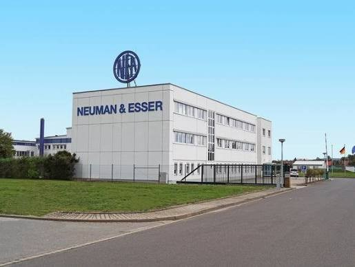
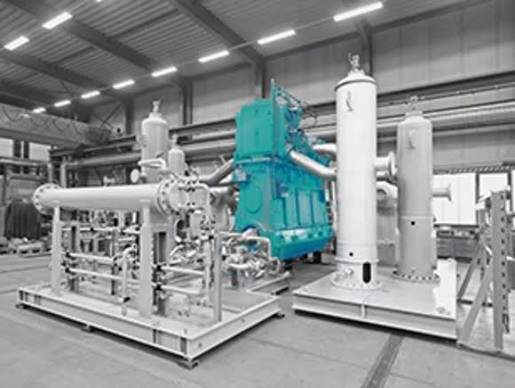
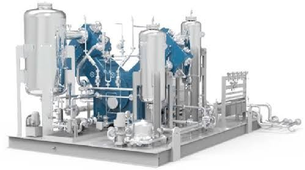

V-type compressors
Reciprocating compressor configuration listed in the supplied NEA profile.
Compression / original parts / service
NEUMAN & ESSER South East Asia provides technical and commercial support from bidding through project execution, commissioning, aftermarket sales, and compressor service.

On 1 January 2021, NEAC Compressor Service changed to NEUMAN & ESSER South East Asia (SEA). The supplied profile describes sales and application support, international project management through commissioning, and regional aftermarket and service teams.

The supplied NEA material covers reciprocating (piston) compressors in V-type, horizontal, and vertical configurations. Application review considers gas composition, temperature, and molecular weight.


Reciprocating compressor configuration listed in the supplied NEA profile.
Horizontal piston compressor configuration for application-specific selection.
Vertical reciprocating configuration with technical and commercial application support.
NEA SEA technicians repair or exchange components and provide spare parts. The supplied profile lists service and original spare-part support for these compressor lines.
Provide the manufacturer, model, serial number, and year of manufacture so MTSI can confirm the applicable service scope.
Send your operating duty, equipment details, or spare-part reference to MTSI.
EMAIL MTSI ↗